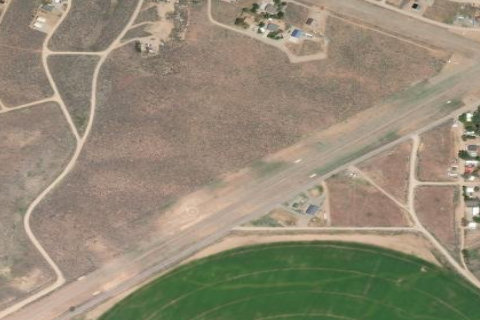

MAGIC RESERVOIR
U93 · ID

Aerial imagery source: Esri, Vantor, Earthstar Geographics, and the GIS User Community
| Identifier | U93 |
|---|---|
| State | ID |
| Runway length | 4,000 ft |
| Runway width | 100 ft |
| Surface | TURF-GRVL |
| Runway | 04/22 |
| Elevation | 4,844 ft |
| Ownership | public |
| CTAF | 122.9 |
| Coordinates | 43.28066666, -114.39638888 |
Notes
[idaho_itd] State Airfield [shortfield] Location Overview Magic Reservoir Airstrip sits near the shore of Magic Reservoir in south-central Idaho, on the border of Blaine and Camas counties, not far from the town of Fairfield. The reservoir itself spans land managed by the Bureau of Land Management and lies on the Big Wood River. The strip is a single turf runway oriented 4/22, about 4,000 feet long, sitting at roughly 4,844 feet elevation. Camping & Recreation Camping is allowed right on the airstrip, with picnic tables, stoves, and pit toilets on site (though you'll want to bring your own shade), and tie-downs are available for aircraft. Magic Reservoir is well known for its large trout, making it a favorite stop for pilots who bring a float tube or raft to fish. Food and lodging can also be found just off the end of the airstrip. Beyond fishing, the surrounding reservoir and BLM land support boating, camping, and hunting as well. Notes & Warnings The strip has no winter maintenance, so it's a fair-weather, warmer-season destination. It's equipped with basic navigational aids — a windsock and segmented circle — but little else in the way of infrastructure, so pilots should plan for a rustic backcountry-style strip rather than a full-service airport. As with many Idaho turf strips, conditions can vary with moisture and use, so a check of current surface conditions before landing is worthwhile, and no pilot reports were on file at last check, meaning recent firsthand condition updates may be limited. History The airstrip takes its name from Magic Reservoir, which was created when Magic Dam was completed in 1910 across the Big Wood River by Magic Reservoir Hydroelectric, Inc. for irrigation, flood control, and hydroelectric power, and which today irrigates roughly 89,000 acres around Shoshone and Richfield. The reservoir grew into a popular recreation destination for boating, fishing, and camping over the following decades, and the adjacent airstrip developed as part of Idaho's long tradition of backcountry aviation — small grass strips built to give pilots direct access to remote fishing, hunting, and camping spots that would otherwise require a long drive. Today it remains a modest, informal facility valued mostly by recreational pilots chasing the reservoir's famously large trout.